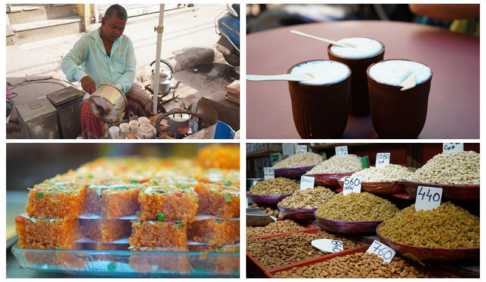
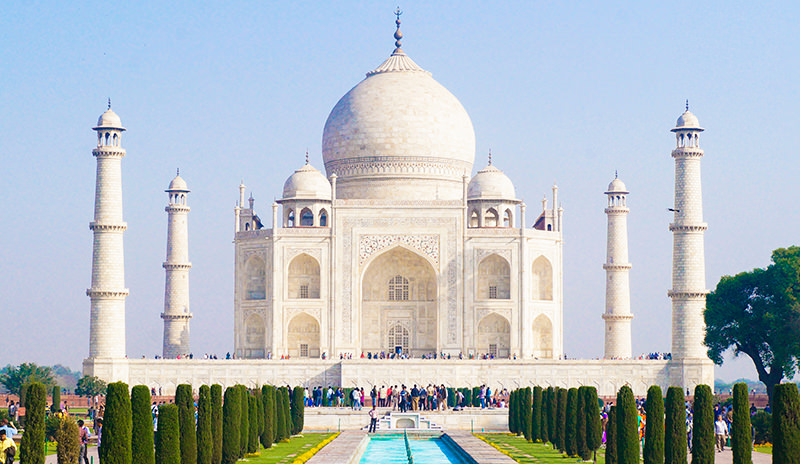
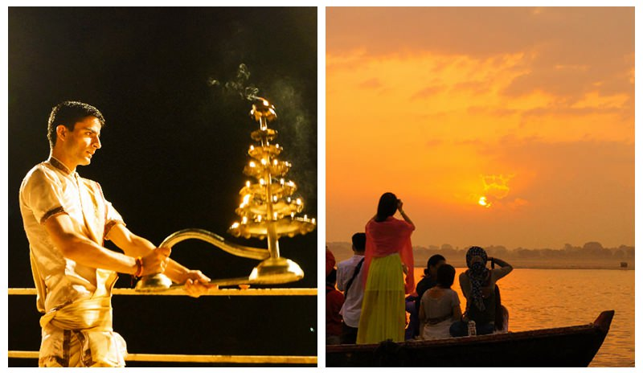
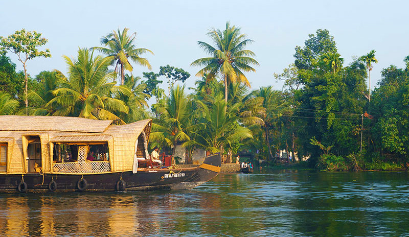
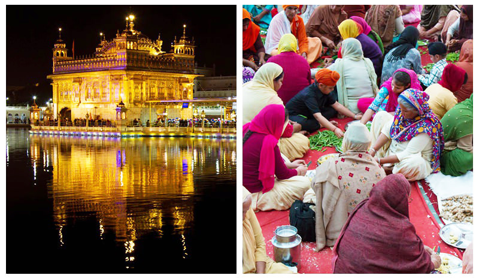

AVAILABLE DESTINATION
Top Travel Destinations in India
Category: India, Travel Tips & Guides, Best Things to Do Where are the best places to go in India? Many travelers find it hard to choose because India is such a large and culturally diverse country and has so many amazing places to visit. Of course, some places are always more popular than others. I've picked ten of the best destinations for your inspiration, from the classic Golden Triangle cities to the relaxing states of Goa and Kerala in the south, and Amritsar on the northwest frontier.1. Delhi for history and food
As India's capital, Delhi is a mesmerizing mix of diverse cultures and has everything from rich history to fabulous food. It's a city built upon cities, giving modern-day Delhi many ancient sights and monuments from different eras. Explore this treasure trove of ancient history and culture from one of India's largest mosques Jama Masjid to the 17-century Red Fort that influenced many later buildings in north India, Humayun's Tomb, Laxmi Narayan Temple, and many other mosques, tombs of famous historical figures, and temples. With some of the country's most vibrant food scenes, Delhi is also known as the culinary capital of India. You shouldn't miss trying some famous Delhi cuisine when you are in the city, whether at a local restaurant or at a street stall. Must eats include butter chicken, kebabs, dal makhani, samosas, kulfi, etc. The best way is to take a food tour of Old Delhi with a local guide, combining history, culture, and cuisine, and giving you the most enriching experience. 2. Agra for the iconic Taj Mahal
Agra is home to India's most iconic attraction the Taj Mahal and a part of the famous Golden Triangle route, making it one of the most visited cities in India. The magnificent Taj Mahal, built by the fifth emperor of the Mughal Empire Shah Jahan as a memorial to his beloved wife Mumtaz Mahal, is considered to be the symbol of love and is one of the New Seven Wonders of the World. Every year, millions of visitors come to admire this beautiful mausoleum and listen to the fascinating story behind it. Famous visitors include Princess Diana, Hillary Clinton, and Mark Zuckerberg. Before you go, check out more information you need with our two other posts featuring the Taj Mahal: All You Need to Know About Taj Mahal and Dos and Don'ts for Visiting the Taj Mahal.  As the formal capital city of the Mughal Empire, Agra has other interesting sites that are worth visiting, such as Agra Fort, one of the finest Mughal forts, and the Tomb of Itimad-Ud-Daulah which is often called the Baby Taj. It is also highly recommended that you take a side trip to Fatehpur Sikri, the short-lived capital of the Mughal Empire, where you 'll find some of the finest examples of Mughal architecture. Best time to visit Agra: October to March. The best time of the day to visit the Taj Mahal is either at sunrise or sunset.3. Rajasthan for forts and palaces
Literally meaning "the Land of the Kings”, India's northern state of Rajasthan is the most colorful state of the country and boasts some of the most instagram-worthy places in India. It amazes visitors with its magnificent forts and palaces built by the chivalrous Rajputs (a member of northern India's Hindu warrior caste) hundreds of years ago. Many of the palaces and forts have been converted into luxurious hotels and impressive museums. Jaipur, the capital city and gateway to the state, is nicknamed "The Pink City" because of the pink walls and building s of the old city. In 2019, the city ranked among TripAdvisor's Top 25 Destinations in the World awarded by millions of real travelers. If you are interested, you can spend days exploring its heritage sites like the City Palace, Hawa Mahal (Palace of the Winds), Jal Mahal (Water Palace), Amber Fort, Nahargarh Fort, and Jantar Mantar, a well-preserved observatory. Find out more about what to see and do in Jaipur. 12-Day Classic Rajasthan here are many other fabulous forts and palaces in Rajasthan, including the hill-top Mehrangarh Fort in Jodhpur which offers fantastic views of the blue-painted houses of the old city, Jaisalmer Fort in Jaisalmer which is located in the heart of the Thar Desert, and City Palace of Udaipur which is perched peacefully on the banks of Lake Pichola. Best time to visit Rajasthan: October to March when it is warm and dry.4. The Ganges (Varanasi) for spirituality
Varanasi, located on the left bank of India's most sacred river, the Ganges, is the holiest city for the Hindus and undoubtedly the spiritual heart of India. It is not like any other city in India. It is where you can witness rituals of life and death in public: pilgrims bathing in the sacred waters of the Ganges to wash away sins, and bodies of the dead cremated in the riverside ghats wishing for reincarnations. The locals are seemingly used to it. This is perhaps what makes Varanasi one of the most magical and fascinating places to visit. Some of the must-have experiences include taking a stroll along the riverside ghats, taking a sunrise boat ride on the Ganges and watching the evening Ganga Aarti ceremony.  Besides the River Ganges, there are many other spiritual places to visit, such as Kashi Vishwanath Temple (Golden Temple) that is dedicated to Shiva, Bharat Mata Temple for Mother India, and Sarnath (The Deer Park) where Buddha preached his first sermon. Best time to visit Varanasi: October to March as the weather is at its coolest.5. Ranthambore for wildlife
Named after the 10th-century Ranthambore Fort and once serving as the royal hunting ground of the maharajahs, Ranthambore National Park is one of the best places for tracking tigers in India. There are about 70 tigers in the park, with Zone 6 boasting the best chances of sighting them (the park it divided into 10 zones). Aside from tigers, the park has a great many other wild animals including sloth bears, leopards, and over 300 species of birds. Tip: If you want to have higher chances of seeing tigers or as many animals as possible, it is suggested you make time, such as two or three days for more safaris. Best time to visit Ranthambore: the national park is only open to visitors from October to June, and is closed for the rest of the year due to the monsoon rains. The winter months from October to December offer cooler weather. If you don't mind the hot weather, the months of March to June are the best time for wildlife viewing as most animals come out in search of water.6. Goa for Beaches
Located on the western coast is the India's smallest state, Goa with beautiful coastlines stretching along the Arabian Sea. It was a Portuguese colony before 1961 and has well-preserved colonial architecture. Goa's biggest draw is its blissful beaches, each having its own personality. Beaches in the north are usually more developed and action-packed whereas those in the south are relatively quieter. Head to Anjuna to enjoy hippie market bliss, Palolem for palm- fringed soft sands, Mandrem for laid-back ambiance, Agonda for tranquility, and many others for various tastes. In addition to lazing on the beach, you can practice yoga and meditation, as many travelers do. There are sunrise yoga sessions that you can participate in. You may also like to taste the local food, which is a fusion of Indian and Portuguese, visit a spice farm to discover why the Portuguese were so fascinated with Goa, and spend time exploring the Portuguese colonial heritage, such as the Basilica of Bom Jesus, St. Cathedral, and Church of Lady of Rosary. Best time to visit Goa: October to March for the dry and warm weather. April and May are hot and humid, and monsoon rains arrive from June to September.7. Kerala Backwaters for relaxation
For many travelers, Kerala is the most picturesque state, with spectacular landscapes ranging from glistening backwaters to sunny beaches and verdant hills. The most sought after attraction of the state is the well-known Kerala backwaters and Alleppey is the hub of backwaters. It's every photographer's dream to capture this peaceful, charming palm-fringed network of waterways, lagoons, canals, and rivers. The best way to experience the backwaters is to take a traditional houseboat that was once used to carry fish, rice, and spices by locals but is now transformed into a "floating hotel". You can spend a night or two on the water and enjoy freshly cooked Indian food on board while watching the world passing by. It is the most classic Kerala experience and surely should be added to your south India vacation.  Best time to visit Kerala: October to March for the mild and pleasant weather. April, May, and June are the hottest months. There are heavy monsoon rains from July to September.8. Munnar for tea and nature
Sitting high at an elevation of over 1,500 m / 4,921 ft, the picturesque and tranquil hill station of Munnar is the best place in South India to escape the heat of the plains and get close to nature. With beautiful valleys, mountain streams, and emerald-green tea plantations, it is a paradise for honeymooners, leisure travelers, and nature enthusiasts. This is also the center of the largest tea-growing area in south India. You can take a nature walk through the tea estates that date back to the 19th century, watch women plucking tea leaves, and visit a factory to learn the all the work that goes into making a cup of tea. Be sure to sample some tea and bring some back home as a souvenir. Best time to visit Munnar: October to March for the most pleasant weather. April to June is also a good time. Monsoon season (July to September) brings heavy rains that could hamper your travel plan, but it also gives the hill station a fresh look.9. Madurai for South Indian culture
Madurai, in the southern Indian state of Tamil Nadu, is one of India's oldest cities, with a history of over 2,500 years. It is still the center of Tamil culture and learning, attracting both domestic and foreign visitors to experience its unique south Indian culture. The city, also called "Athens of the East", is most famous for its temples. The celebrated Meenakshi Temple is the most impressive and important temple in south India, with a dazzling maze-like structure. This huge temple complex has 14 towers and a Hall of Thousand Pillars. There is a night ceremony during which the image of Shiva is carried to join that of his consort Parvati. So it is suggested you explore the temple during the day time and watch the ceremony at night to get a more enriching experience. 2 km / 1.2 mi Southeast of Meenakshi Temple is the 17-century Thirumalai Nayak Palace, the second largest attraction in Madurai. The palace was built by King Tirumala Nayaka that ruled Madurai from 1623 to 1659. It represents a fusion of Dravidian and Islamic architectural styles and features big, beautiful pillars. Every evening, there is a light and sound show about the story of Silappathikaram, the earliest Tamil epic. Best time to visit Madurai: October to March.10. Amritsar for the Golden Temple
Situated in India's Northwest frontier with Pakistan, Amritsar offers a distinctive travel experience. Here almost half of the locals are Sikhs who believe in equality regardless of race, religion, caste, and gender. (The word "Sikh" actually means "learner" or "seeker of truth" and Sikhism is the world's fifth-largest religion.) The city of Amritsar, founded in 1577 by the fourth Sikh guru, is the holiest city for the Sikhs and home to the majestic Golden Temple (Sri Harmandir Sahib, "The Abode of God"), the central place of worship for all Sikhs. The temple welcomes visitors of all religions and attracts pilgrims from all over the world.  Golden Temple at night and women preparing food in the Community Kitchen The dome is covered in gold and the temple has entrances on all four sides, symbolizing openness. When lit up at night, the temple looks spectacular, with its gold dome illuminated. So the evening is a great time to admire its beauty and charm. Apart from its striking appearance, the Golden Temple is known for having the largest free community kitchen in the world, offering free vegetarian meals to up to 100,000 visitors daily. It's possible to tour the kitchen and even volunteer to prepare and serve food there. Odynovo travel expert Nina Xu shared her personal experience of visiting the community kitchen in this post: How to Explore Amritsar in One Day. Tips for visiting the Golden Temple 1). Dress appropriately. Avoid shorts and keep shoulders covered. 2). Smoking and alcohol drinking is strictly prohibited. 3). Visitors are required to wear a head scarf to enter the temple. If you forget to bring one, you can buy one outside the temple. Best time to visit Amritsar and the Golden Temple: October, November, February, and March. The climate of Amritsar is quite extreme; summer is very hot, and winter, cold. Temperatures start to increase in April and monsoon rain comes in July. After reading this post, you may have an idea where you want to go in India. Odynovo can create a custom trip to your unique interests and needs, making the most of your time and money. Rest assured that it will be entirely worry-free and enjoyable.